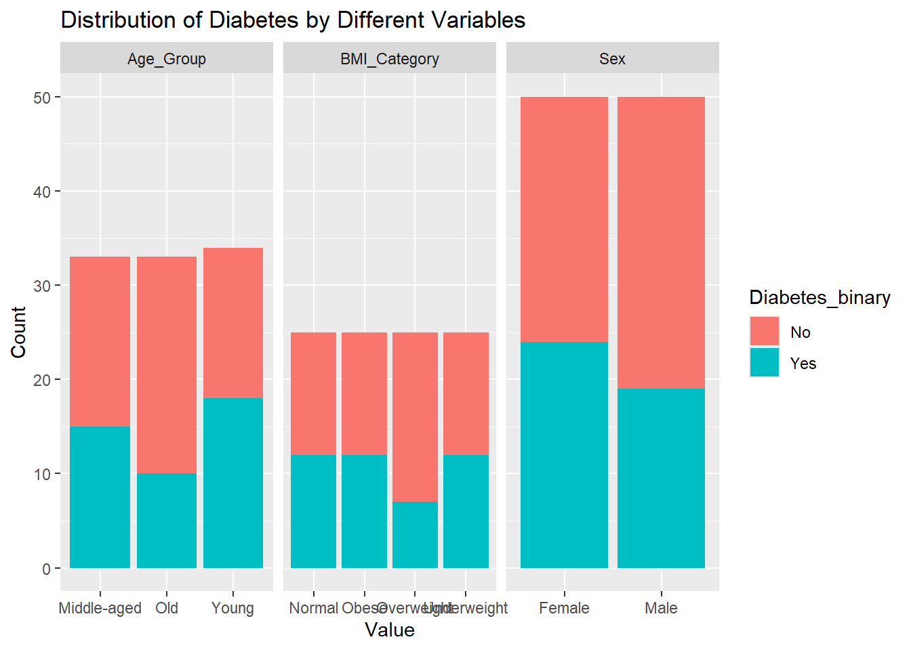

library(tidyverse)
library(ggplot2)
#library(ggmosaic)
library(knitr)
library(kableExtra)Diabetes Health Indicators - Exploratory Data Analysis
Diabetes Summary
Diabetes is a common chronic disease in the United States, affecting millions of Americans and imposing a significant financial burden on the US healthcare system. It is a disease that impairs the body’s ability to regulate blood glucose, leading to severe complications like heart disease, vision loss, and kidney disease. Early diagnosis and management through lifestyle changes and medical treatments can lessen its impact. The Center for Disease Control (CDC) reports that as of 2018, 34.2 million Americans have diabetes, with substantial economic costs nearing $400 billion annually. To better understand diabetes, the CDC conducts an annual telephone survey through the Behavioral Risk Factor Surveillance System (BRFSS). They have been collecting observational data since 1984 and through this program, 400,000 responses are collected annually on various behaviors and conditions about the disease.
The dataset found in this analysis is from 2015. There are 253680 observations and 22 independent variables.
About the variables
#Read in the dataset
diabetes_data_raw <- read_csv("diabetes_binary_health_indicators_BRFSS2015.csv")#List the various column headers
colnames(diabetes_data_raw) [1] "Diabetes_binary" "HighBP" "HighChol"
[4] "CholCheck" "BMI" "Smoker"
[7] "Stroke" "HeartDiseaseorAttack" "PhysActivity"
[10] "Fruits" "Veggies" "HvyAlcoholConsump"
[13] "AnyHealthcare" "NoDocbcCost" "GenHlth"
[16] "MentHlth" "PhysHlth" "DiffWalk"
[19] "Sex" "Age" "Education"
[22] "Income" #Checking for missing data.
diabetes_data_NA_report <- diabetes_data_raw %>%
summarise_all(~sum(is.na(.))) %>%
pivot_longer(cols = everything(), names_to = "Independent Variable", values_to = "Number of NAs Discovered")
print(diabetes_data_NA_report, n = Inf)# A tibble: 22 × 2
`Independent Variable` `Number of NAs Discovered`
<chr> <int>
1 Diabetes_binary 0
2 HighBP 0
3 HighChol 0
4 CholCheck 0
5 BMI 0
6 Smoker 0
7 Stroke 0
8 HeartDiseaseorAttack 0
9 PhysActivity 0
10 Fruits 0
11 Veggies 0
12 HvyAlcoholConsump 0
13 AnyHealthcare 0
14 NoDocbcCost 0
15 GenHlth 0
16 MentHlth 0
17 PhysHlth 0
18 DiffWalk 0
19 Sex 0
20 Age 0
21 Education 0
22 Income 0#Factorize the binary variables for better downstream analysis.
#There are about 3000 rows where the BMI was observed to be above 50. I considered removing rows with these extremely high values but decided not to. In production, I likely would have sought counsel from a specialist or someone familiar with recording observations to this study to look into these values for possible errors. I will conduct an outlier test on these values; perhaps included two reports--one with and one without the BMI extremes.
diabetes_data_clean <- diabetes_data_raw %>%
mutate_at(vars(HighBP, HighChol, CholCheck, Smoker,
Stroke, HeartDiseaseorAttack, PhysActivity, Fruits,
Veggies, HvyAlcoholConsump, AnyHealthcare, NoDocbcCost,
DiffWalk, Sex), as.factor)# Group variables into common themes.
Health_Factors <- c("Diabetes_binary","BMI","HighBP","HighChol","Stroke","HeartDiseaseorAttack","GenHlth","MentHlth","PhysHlth","DiffWalk","Sex","Age")
Lifestyle_Factors <- c("PhysActivity","Smoker","Fruits","Veggies","HvyAlcoholConsump","Education","Income")
Healthcare_Factors <- c("CholCheck","AnyHealthcare","NoDocbcCost")| Health_Factors | Levels |
|---|---|
| Diabetes_binary | 0, 1, 2 |
| BMI | 0-9999 |
| HighBP | 0, 1 |
| HighChol | 0, 1 |
| Stroke | 0, 1 |
| HeartDiseaseorAttack | 0, 1 |
| GenHlth | 1, 2, 3, 4, 5 |
| MentHlth | 1-30 |
| PhysHlth | 1-30 |
| DiffWalk | 0, 1 |
| Sex | 0, 1 |
| Age | 1-13 |
| Lifestyle_Factors | Levels |
|---|---|
| PhysActivity | 0, 1 |
| Smoker | 0, 1 |
| Fruits | 0, 1 |
| Veggies | 0, 1 |
| HvyAlcoholConsump | 0, 1 |
| Education | 1, 2, 3, 4, 5, 6 |
| Income | 1, 2, 3, 4, 5, 6, 7, 8 |
| Healthcare_Factors | Levels |
|---|---|
| CholCheck | 0, 1 |
| AnyHealthcare | 0, 1 |
| NoDocbcCost | 0, 1 |
# Summary statistics of our numeric variables# list of column values and their summaries.
summary_list <- lapply(diabetes_data_clean, summary)
# Convert the list to a data frame
summary_df <- as.data.frame(do.call(rbind, summary_list))
# Tweaks made to the data.frame to get it to display in quarto output.
summary_df <- summary_df %>%
mutate(Variable = rownames(summary_df)) %>%
select(-Variable) %>%
mutate(across(where(is.character), as.numeric))
# Print the summary dataframe
print(summary_df[c("BMI", "GenHlth", "Age", "Education", "Income"),]) Min. 1st Qu. Median Mean 3rd Qu. Max.
BMI 12 24 27 28.382364 31 98
GenHlth 1 2 2 2.511392 3 5
Age 1 6 8 8.032119 10 13
Education 1 4 5 5.050434 6 6
Income 1 5 7 6.053875 8 8Boxplot
# Example tibble
diabetes_data_clean <- tibble(
Sex = rep(c("Male", "Female"), each = 50),
Age_Group = rep(c("Young", "Middle-aged", "Old"), length.out = 100),
BMI_Category = rep(c("Underweight", "Normal", "Overweight", "Obese"), length.out = 100),
Diabetes_binary = sample(c("Yes", "No"), 100, replace = TRUE)
)
# Reshape data to long format
diabetes_data_long <- diabetes_data_clean %>%
pivot_longer(cols = c(Sex, Age_Group, BMI_Category), names_to = "Variable", values_to = "Value")
# Create stacked bar chart
ggplot(diabetes_data_long, aes(x = Value, fill = Diabetes_binary)) +
geom_bar(position = "stack") +
labs(title = "Distribution of Diabetes by Different Variables", x = "Value", y = "Count", fill = "Diabetes_binary") +
facet_wrap(~ Variable, scales = "free_x")
ggplot(diabetes_data_clean, aes(x = HighBP)) +
geom_bar() +
facet_wrap(~ Diabetes_binary) +
labs(title = "Distribution of HighBP by Diabetes_binary", x = "HighBP", y = "Count")ggplot(diabetes_data_clean, aes(x = Diabetes_binary, y = BMI)) +
geom_boxplot() +
labs(title = "BMI by Diabetes Status", x = "Diabetes_binary", y = "BMI")ggplot(diabetes_data_clean, aes(x = Diabetes_binary, y = BMI)) +
geom_violin() +
labs(title = "BMI by Diabetes Status", x = "Diabetes_binary", y = "BMI")ggplot(diabetes_data_clean, aes(x = factor(1), fill = Diabetes_binary)) +
geom_bar(position = "fill") +
labs(title = "Proportion of Diabetes_binary", x = "", y = "Proportion") +
coord_polar(theta = "y") +
theme_void()ggplot(diabetes_data_clean) +
geom_mosaic(aes(x = product(Sex, Diabetes_binary), fill = Diabetes_binary)) +
labs(title = "Mosaic Plot of Sex and Diabetes Status", x = "Sex", y = "Diabetes Status")Appendix: Variable description
(Disease Control & Prevention, 2015)
Diabetes_binary
0 = no diabetes
1 = prediabetes
2 = diabetes
HighBP
0 = no high BP
1 = high BP
HighChol
0 = no high cholesterol
1 = high cholesterol
CholCheck
0 = no cholesterol check in 5 years
1 = cholesterol check in 5 years
BMI
Continuous Data
Smoker
To the question: Have you smoked at least 100 cigarettes in your entire life? [Note: 5 packs = 100 cigarettes]
0 = no
1 = yes
Stroke
To the question: (Ever told) you had a stroke.
0 = no
1 = yes
HeartDiseaseorAttack
Coronary heart disease (CHD) or myocardial infarction (MI)
0 = no
1 = yes
PhysActivity
Physical activity in past 30 days (not including job)
0 = no
1 = yes
Fruits
Consume Fruit 1 or more times per day
0 = no
1 = yes
Veggies
Consume Vegetables 1 or more times per day
0 = no
1 = yes
HvyAlcoholConsump
(adult men >=14 drinks per week and adult women>=7 drinks per week)
0 = no
1 = yes
AnyHealthcare
Have any kind of health care coverage, including health insurance, prepaid plans such as HMO, etc.
0 = no
1 = yes
NoDocbcCost
To the question: Was there a time in the past 12 months when you needed to see a doctor but could not because of cost?
0 = no
1 = yes
GenHlth
To the question: Would you say that in general your health is: scale 1-5
1 = excellent
2 = very good
3 = good
4 = fair
5 = poor
MentHlth
Days of poor mental health scale 1-30 days
PhysHlth
physical illness or injury days in past 30 days scale 1-30
DiffWalk
Do you have serious difficulty walking or climbing stairs?
0 = no
1 = yes
Sex
0 = female
1 = male
Age
1 = Age 18 to 24 Respondents with reported age between 18 and 24 years (18 <= AGE <= 24)
2 = Age 25 to 29 Respondents with reported age between 25 and 29 years (25 <= AGE <= 29)
3 = Age 30 to 34 Respondents with reported age between 30 and 34 years (30 <= AGE <= 34)
4 = Age 35 to 39 Respondents with reported age between 35 and 39 years (35 <= AGE <= 39)
5 = Age 40 to 44 Respondents with reported age between 40 and 44 years (40 <= AGE <= 44)
6 = Age 45 to 49 Respondents with reported age between 45 and 49 years (45 <= AGE <= 49)
7 = Age 50 to 54 Respondents with reported age between 50 and 54 years (50 <= AGE <= 54)
8 = Age 55 to 59 Respondents with reported age between 55 and 59 years (55 <= AGE <= 59)
9 = Age 60 to 64 Respondents with reported age between 60 and 64 years (60 <= AGE <= 64)
10 = Age 65 to 69 Respondents with reported age between 65 and 69 years (65 <= AGE <= 69)
11 = Age 70 to 74 Respondents with reported age between 70 and 74 years (70 <= AGE <= 74)
12 = Age 75 to 79 Respondents with reported age between 75 and 79 years (75 <= AGE <= 79)
13 = Age 80 or older Respondents with reported age between 80 and 99 years (80 <= AGE <= 99)
Education
1 = Never attended school or only kindergarten
2 = Grades 1 through 8 (Elementary)
3 = Grades 9 through 11 (Some high school)
4 = Grade 12 or GED (High school graduate)
5 = College 1 year to 3 years (Some college or technical school)
6 = College 4 years or more (College graduate)
Income
1 = Less than $10,000
2 = Less than $15,000 ($10,000 to less than $15,000)
3 = Less than $20,000 ($15,000 to less than $20,000)
4 = Less than $25,000 ($20,000 to less than $25,000)
5 = Less than $35,000 ($25,000 to less than $35,000)
6 = Less than $50,000 ($35,000 to less than $50,000)
7 = Less than $75,000 ($50,000 to less than $75,000)
8 = $75,000 or more
References
Disease Control, C. for, & Prevention. (2015). BRFSS codebook 2015. https://www.cdc.gov/brfss/annual_data/2015/pdf/codebook15_llcp.pdf